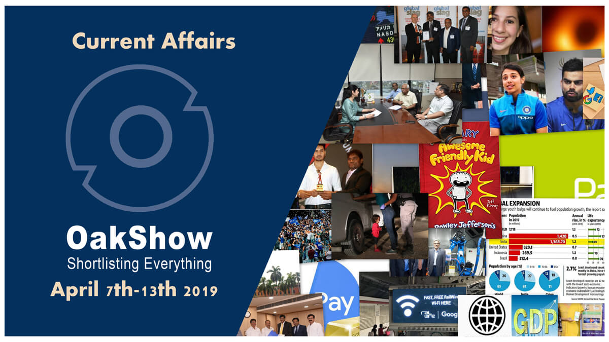

Important News Reports from 7th April 2019-13th April 2019 Shortlisted in One Place|Current Affairs Corner
Posted: OakShow | Date : 09-04-2019
Last Edited : OakShow | Date : 14-04-2019

SpaceX carries out first commercial launch with Falcon Heavy rocket to place a Saudi telecoms satellite into orbit operated by Arabsat. Source:space.com
SpaceX launched the first commercial Falcon Heavy mission and aced a triple booster landing for the first time. The Saudi telecoms shiny silver satellite was successfully deployed after lift-off of about 34 minutes from Cape Canaveral, Florida. The satellite is designed to provide television, internet, telephone, and secure communications to customers in the Middle East.Click Here to Read News For April 13th,2019
The Amazing Triple Rocket Landing of SpaceX's Falcon Heavy Launch of Arabsat-6A
By:Space.com - 13 April,2019
Short Detail
SpaceX carries out first commercial launch with Falcon Heavy rocket to place a Saudi telecoms satellite into orbit operated by Arabsat. Source:space.com
HDFC tops Forbes' list of best Indian banks, SBI not even in top 10
By:Business Today - 13 April,2019
Short Detail
Forbes has compiled a first-ever list of the World's Best Bank 2019 in terms of customer services and technological advancements.
HDFC was raked 1st followed by ICICI ,DBS Bank,Kotak Mahindra Bank and IDFC in the 2nd,3rd,4th and 5th positions respectively.To our surprise SBI could not even make it up to Top 10 ranking at 11th by the customers.
Syndicate Bank, PNB, Allahabad Bank, Vijaya Bank and Axis Bank were ranked from sixth to tenth respectively.
India's 2nd largest Public Sector Bak Bank of Baroda was placed in the 16th postion followe dby PayTm Payments bank, where as Canara Bank wa splaced in the 30th position.
NOTE:Forbes had partnered with Statista, a market research company, to measure the best banks in 23 countries.
Image of crying toddler on US border wins World Press Photo award
By:The Times of Israel - 13 April,2019
Short Detail
photograph of a Honduran toddler crying as a US Border Patrol officer pats down the child’s mother in Texas was named as the prestigious World Press Photo of the Year at a ceremony Thursday evening.

In this file photo taken on June 12, 2018 a two-year-old Honduran asylum seeker cries as her mother is searched and detained near the US-Mexico border in McAllen, Texas. (Photo by JOHN MOORE / GETTY IMAGES NORTH AMERICA / AFP) Source:The Times of Israel
John Moore took the picture in the Rio Grande Valley on 12th June 2018.
The little girl in this picture name Yanela and her mother Sandra Sanchez illegally crossed the US-Mexican border last year.
Dutch-Swedish photographer Pieter Ten Hoopen won the “World Press Photo Story of the Year Award” for the image of 2018 mass-migrant caravan to the US border.Last year, photographer Ronaldo Schemidt won the World Press Photo Award with a fiery image of a masked Venezuelan protester in flames.
Google Pay now allows users to Buy, Sell Gold in India
By:The Indian Wire - 13 April,2019
Short Detail
Google Pay in partnership with MMTC-PAMP joins the race of selling gold online with Paytm, PhonePe, and MobiKwik.

Google Pay partners with MMTC-PAMP to introduce buying and selling of Gold. Source:dailyexcelsior.com
With this, Google Pay users can purchase gold for any value that will be stored in secure vaults on their behalf by MMTC-PAMP. The users can buy and sell the gold any time at the latest price, refreshed every few minutes, as displayed on the Google Pay app.
PayU Acquires US-Based Wibmo For $70 mn
By:Sakshi Post - 13 April,2019
Short Detail
Netherlands based Online payment service provider PayU on Friday announced the acquisition of US-based financial technology firm Wibmo for $70 million (around Rs 484 crore).

PayU Acquires US-Based Wibmo For $70 mn Source:Sakshi Post
Aakash Moondhra, CFO, PayU Global said: "We will partner with leading banks to enable digital banking, merchants will gain with higher conversion rates and increased sales, and consumers will have a frictionless experience in completing digital payments transactions."
CMFRI, ISRO join hands to protect coastal wetlands
By:Business Standard - 13 April,2019(IST)
Short Detail
A Memorandum of Understanding (MoU) was signed between the CMFRI and the Space Applications Centre (SAC) of the ISRO to develop a mobile app and a centralised web portal with complete database of wetlands in the country which were smaller than 2.25 hectares.
This is the first time that a fisheries institute is collaborating with the ISRO to develop a comprehensive climate resilient framework for fisheries and wetlands.
Najma Akhtar becomes Jamia Millia Islamia’s first woman vice chancellor
By:Scroll.in - 13 April,2019(IST)
Short Detail
National Institute of Educational Planning and Administration Professor Najma Akhtar was appointed Vice Chancellor of New Delhi’s Jamia Millia Islamia, becoming the first woman to head the 99-year-old university.

Professor Najma Akhtar named as the first woman vice-chancellor of Jamia Millia Islamia University (JMI) Source:Jamia Milia Islamia/via Facebook
Bongaigoan administration launches mobile app to motivate voters
By:The Sentinel Assam - 13 April,2019(IST)
Short Detail
The Bongaigaon district administration has developed an exclusive mobile phone application to motivate voters especially for the first time voters to exercise their franchise in the Lok Sabha polls.

Bongaigaon district administration in Assam developed mobile application ‘Sankalp’ to motivate voters Source:NDTV
A tutorial video has been made for the mobile app ‘Sankalp’ on how to use an Electronic Voting Machine. Through the app, the users can also check their electoral roll details.
The district of Bongaigaon has 11,000 first time voters of the 1.7lakh voters in total and will go to poll on April 23 the third phase of Assam polls.

First Ever Image of a Black Hole processed by Katie Bouman. Source:indiatimes.in
India and the Netherlands reviewed bilateral cooperation in various fields, including political, economic and cultural ties, and deliberated on regional and multilateral issues, including cooperation at United Nations and other international fora during the Foreign Office Consultations in New Delhi. The Indian delegation was led by A. Gitesh Sarma, Secretary (West), Ministry of External Affairs (MEA) and the Dutch side was led by Johanna (Yoka) Brandt, Secretary General, Ministry of Foreign Affairs, according to an official statement by MEA. At the 25th edition of the CII-DST Tech Summit which will be held in New Delhi in October 2019, Netherlands will participate as the partner country.Click Here to Read News For April 12th,2019
India, Netherlands agree to boost bilateral ties
By:Business Standard - 12 April,2019
Short Detail
Seeing darkness: the first image of a black hole
By:The Hindu - 12 April,2019
Short Detail
The Event Horizon Telescope collaboration on April 10th 2019 showed the world the very first image of a black hole which was a halo of dust and gas tracing the outline of a colossal black hole.
First Ever Image of a Black Hole processed by Katie Bouman. Source:indiatimes.in
The blackhole was found in the centre of galaxy M87 (Messier 87)(appx 55million light years from Earth).
This telescope is made of up eight independent observatories and acts as one enormous detector. It collected the data for the first black hole image in April 2017 but it took two years for scientists to assemble the images with the help of Katie Bouman.
Russia honours PM Modi with highest civilian award
By:Business Today - 12 April,2019
Short Detail
The Indian Prime Minister has been honoured with the Order of Saint Andrew The Apostle(country's highest civilian award) for exceptional services in promoting special & privileged strategic partnership between Russia and India.

The Order of Saint Andrew The Apostle, the highest civilian honour of the Russian Federation, was conferred upon PM Narendra Modi Source:Business Today
Banks close FY19 with 13.24% credit growth, deposits up 10.03%
By:MoneyControl - 12 April,2019
Short Detail
According to the data of Reserve Bank of India, which was released on 11th April, 2019, bank credit rose 13.24% to Rs 97.67 lakh crore for the fortnight to March 29. This is the 2nd consecutive time.
Deposits have grown by 10.03 percent to Rs 125.72 lakh crore during the same period.
PAISALO signs up with SBI to disburse 2 lakh MSME loans in FY20
By:Your Story - 12 April,2019
Short Detail
PAISALO Digital, a leading non-deposit-taking NBFC registered with the Reserve Bank of India (RBI), signed a co-origination MSME loan agreement with State Bank of India (SBI)

SBI signs its first ever co-origination loan agreement with PAISALO Digital Limited Source: yourstory.com
The release added that through this alliance, a platform will be introduced where the MSME loan ticket is designed at Rs 10,000 to Rs 2 lakh. The company expects to disburse 200,000 MSME loan applications in FY20.
The main objective is to bring Micro-Finance Institutions (MFIs)/Non-Banking Finance Companies (NBFCs) together.
TCS Partners With Google to Develop Cloud Solutions
By:Nearshore Americas - 12 April,2019(IST)
Short Detail
Tata Consultancy Services (TCS) joined with Google to develop cloud solutions in an effort to capitalize on the growing demand for cloud in the digital services industry.
TCS’ solutions on Google Cloud Platform (GCP) will support enterprises build secure, cloud-native analytics platforms that facilitate high levels of personalization, easy to maintain, and are cost effective.
TCS is a partner of Google Anthos, which is a cloud platform that allows the users to run applications on the public cloud or on existing on-premise hardware investments.
2 West Bengal govt schemes win UN awards
By:Business Standard - 12 April,2019(IST)
Short Detail
Two schemes of the West Bengal government,"Utkarsh Bangla" and "Sabooj Sathi" for skill development and distribution of bi-cycles to students have won the prestigious World Summit on the Information Society (WSIS) awards of the United Nations.
The "Utkarsh Bangla" project aims at creating a pool of skilled candidates who are industry ready:The aim of this scheme is to give vocational training to school dropouts by providing 400 to 1200 hours of training free of any charge, thus providing impetus to increase employment opportunities for the young generation.The Training will be in trained in driving, tailoring, repairing television and other electronic equipments, beautician courses etc.The syllabus for courses under this scheme has been made in the same level as the National Vocational Education Qualification Framework.
"Sabooj Sathi" scheme,environment-friendly bi-cycles are distributed to students between class IX and XII studying in government run and government aided schools and madrashas of the state.
The West Bengal government had received another UN award in 2017 for its 'Kanyashree' project, a targeted conditional cash transfer scheme aimed at promoting education among girls.
Researchers develop new technique to study movement of cells
By:Business Standard - 12 April,2019
Short Detail
The new technique, called dual-PWS, is label-free and can image and measure macromolecular motion without using dyes.
It also disclosed an undiscovered phenomenon that may play a role in the earliest stages of cell death.
Mint’s Teena Thacker wins Citi Journalistic Excellence Award
By:Livemint - 12 April,2019
Short Detail
Columbia University’s Graduate School of Journalism has selected Mint’s Teena Thacker as the winner of the 2019 Citi Journalistic Excellence Awards.
The deputy editor at Mint,Teena Thacker won this award for her long story in Mint on Johnson and Johnson (J&J's) faulty hip implants in India,In the story, Thacker examined in detail the battle for compensation by Indian patients

RailWire Wi-Fi is live at 1600 railway stations in India Source: rightlog.in
The four-day long joint military exercise between India and Singapore, Bold Kurukshetra 2019, came to an end on Thursday(11th April 2019). The ceremony took place at Babina Military Station in Jhansi district of Uttar Pradesh. "The four-day long joint training focused on developing interoperability and conduct of joint tactical operations in mechanised warfare. The troops learnt about each other's organisations and best practices being followed in combat.",said a spoksperson for the Army. NOTE:This was the 12th joint excersise between Singapore and India.Click Here to Read News For April 11th,2019
Indo-Singapore joint military exercise 'Bold Kurukshetra 2019' ends
By:Business Standard - 11 April,2019
Short Detail
India’s population grew at 1.2% average annual rate between 2010 and 2019: UN
By:The Hindu Businessline - 11 April,2019
Short Detail
India’s population grew at an average annual rate of 1.2 per cent between 2010 and 2019 to 1.36 billion, more than double the annual growth rate of China, according to a report by the United Nations Population Fund.

Between 2010-’19, India’s population grew at 1.2% average annual rate: UN reportSource: affairscloud
In comparison, China’s population stood at 1.42 billion in 2019, growing from 1.23 billion in 1994 and 803.6 million in 1969. China’s population grew at an average annual rate of 0.5 per cent between 2010 and 2019, the report said.
NOTE:This was the 12th joint excersise between Singapore and India.
First-of-its-kind 'Voter Park' inaugurated in Gurugram
By:Outlook India - 11 April,2019
Short Detail
Chandigarh, Apr 11 India's first-of-its-kind 'Voter Park' was inaugurated in Gurugram on Thursday, aimed at increasing voter awareness and educating people about the electoral process.
Haryana Chief Electoral Officer Rajeev Ranjan inaugurated the park in Vikas Sadan building complex,At the park, voters will get information about the polling process and the history of elections in the country, he said.
RailTel turns 1,600 railway stations into RailWire Wi-Fi zones
By:The Hindu Businessline - 11 April,2019
Short Detail
RailWire Wi-Fi by RailTel is now live at 1,600 railway stations across the country, with Santa Cruz railway station in Mumbai becoming the 1,600th station to become a RailWire Wi-Fi zone, Western Railway said on Wednesday.
RailWire Wi-Fi is live at 1600 railway stations in India Source: rightlog.in
RailTel Corporation, a ‘Mini Ratna (category-I)’ PSU, is one of the largest neutral telecom infrastructure providers in the country, owning a pan-India optic fibre network on exclusive Right of Way (ROW) along Railway tracks.
India, Sweden launch joint programme for smart cities, clean technologies
By:The Hitavada - 11 April,2019
Short Detail
INDIA and Sweden on Thursday launched a joint programme that will work towards addressing a range of challenges around smart cities and clean technologies among others. The programme was co-funded by Indian Department of Science and Technology (DST) and Swedish agency Vinnova.
Vinnova will provide funding to Swedish participants up to 2,500,000 Swedish Krona (around Rs 1.87 crore) as grant. On the Indian side, conditional grant of up to 50 per cent (with a limit of Rs 1.5 crore) per project will be provided to the Indian partners.

India and Sweden launches joint programme on solution for smart cities, clean tech Source: The Hitavada
Triple helix model of innovation that include participation of industry, academia and government is implemented in this project.
Namami Gange gets global recognition at world summit
By:The Indian Express - 11 April,2019
Short Detail
The National Mission for Clean Ganga (NMCG) was awarded the distinction of “Public Water Agency of the Year” by Global Water Intelligence at the Global Water Summit in London on April 9, according to a release issued by the NMCG. The Global Water Awards are presented at the Global Water Summit, the major business conference for the water industry worldwide.
2019 edition of Global Water Summit was a 3-day event held at Sofitel London Heathrow Hotel, Hounslow which started from on 8th April.
RBL Bank ties up with CreditVidya for improving customer experience
By:Business Today - 11 April,2019
Short Detail
RBL/Ratnakar Bank Limited has partnered with credit profiler CreditVidya to improve the lender's customer experience.
RBL bank had previously partnered with CreditVidya in 2018 for instant and automated verification of employment details of salaried card applicants.
Hong Kong's stock market overtakes Japan to be world's third largest
By:Business Standard - 11 April,2019(IST)
Short Detail
Stock market of Hong Kong has surpassed Japan to become the world’s third most valuable market after US and China.

Hong Kong's market cap was $5.78 trillion as of Tuesday, compared with $5.76 trillion for Japan, according to data compiled by Bloomberg Source:Business Standard
Hong Kong’s market value stood at $5.78 trillion, surpassing Japan’s market value at $5.76 trillion tally for the first time since 2015.
Scientist Dr A K Singh conferred with Lifetime Achievement Award
By:The Indian Express - 11 April,2019
Short Detail
Dr A K Singh, director at Life Sciences, DRDO was conferred with Lifetime Achievement Award during 4th APJ Abdul Kalam Innovation Conclave at Chandigarh University, Mohali.
The 4th Dr. APJ Abdul Kalam Innovation Conclave was organised by the university to mark World Creativity and Innovation Day.
Jeff Kinney out with new book, first outside 'Diary of a Wimpy Kid' series
By:Business Standard - 11 April,2019
Short Detail
Author Jeff Kinney has come out with a new book -- "Diary of an Awesome Friendly Kid: Rowley Jefferson's Journal", publishers Puffin, the children's imprint of Penguin Books

Jeff Kinney comes out with a book ‘Diary of an Awesome Friendly Kid:Rowley Jefferson’s Journal’ Source:amazon.com
It is Kinney's first book outside of his "Diary of a Wimpy Kid" series."It is written from the point of view of Rowley Jefferson, the best friend of 'Diary of a Wimpy Kid' protagonist Greg Heffley," Puffin said.
Reinsurance brokers permitted to open foreign currency accounts, says RBI
By:Business Today - 11 April,2019
Short Detail
The Reserve Bank of India sanctioned reinsurance brokers to initiate non-interest bearing foreign currency accounts with banks for undertaking transactions.
The Insurance Regulatory and Development Authority of India (IRDA) had issued notification and following this the RBI declared Foreign Exchange Management (Foreign Currency Accounts by a resident person in India) Regulations, 2015 – Opening of Foreign Currency Accounts by Re-insurance and Composite Insurance brokers.
Foreign currency account refers to a bank account operated in currency other than the currency of India or Bhutan or Nepal.

Virat Kohli and Smriti Mandhana named Wisden’sleading cricketers of the year 2019 Source: The News Minute
Wing a subsidy of Google's parent compay Alphabet began flying fresh food, coffee, over the counter medications and other products to select customers as part of its first commercial drone delivery service launched in Australia’s capital Canberra this week. Note: The Drones will not be permitted to fly over main roads and it also has a specific timetable.Click Here to Read News For April 10th,2019
Google's Wing kicks off first drone delivery service in Australia
By:Fox News - 10 April,2019
Short Detail

Project Wing launched its first commercial drone delivery service in Australia's capital. The drones lower small items to the front yards of eligible residences by string. (Wing Australia) Source: Fox News
Virat Kohli and Smriti Mandhana named as Wisden Cricketers’ Almanack’s Leading Cricketers in the World
By:The Indian Express - 10 April,2019
Short Detail
Smriti Mandhana was amed the ‘Leading Cricketer in the World’ in the women’s game while the Indian Men's captain Virat Kohli was named the ‘Leading Cricketer in the World’ i men's game for the third time in a row in this year’s edition of the Wisden Cricketers’ Almanack.
Virat Kohli and Smriti Mandhana named Wisden’sleading cricketers of the year 2019 Source: The News Minute
India to grow at 7.3% in 2019 and 7.5% in 2020: IMF
By:MoneyControl - 10 April,2019(IST)
Short Detail
India is projected to grow at 7.3 percent in 2019 and 7.5 percent in 2020, supported by the continued recovery of investment and robust consumption, thus remaining the fastest growing major economy of the world, according to the IMF.
Netanyahu set for fifth term as Israel's leader as rival concedes defeat
By:CNN - 10 April,2019
Short Detail
With more than 97% of the vote counted, according to Israeli media, a bloc led by Netanyahu's Likud party would secure 65 seats in the 120-strong Knesset. A center-left bloc led by former army chief Benny Gantz Gantz's Blue and White party, supported by the Arab parties, would only muster 55 seats.

Israel’s Benjamin Netanyahu headed to Fifth Term as Prime Minister Source: CNN
The Guardian view on online harms: white paper, grey areas
By:The Guardian - 10 April,2019(IST)
Short Detail
The British government has published an “online harms white paper” which is open for public consultation (till July) focuses to make online social media platforms responsible to safeguard users, especially children. It is a joint proposal from the Department for Digital, Culture, Media and Sport (DCMS) and Home Office.

The internet needs regulation. People and societies need protection. But this will be harder than the government’s new white paper makes it look Image Source: bbci.co.uk
Since all of the social media platforms use strong algorithms leading to echo-chambers, where a user is bombarded with only blinkered content (according to the user’s web-browsing) instead of multi-directional content (i.e. seeing a variety of voices and opinions), all of which can affect children’s brain; the white paper proposes the compulsory ‘duty of care’ on various social media platforms for taking reasonable steps to protect users (focusing on children) from getting harmed.
Emirates Islamic, a bank in Dubai, becomes the world’s first Islamic bank to launch banking via WhatsApp
By:Affairs Cloud - 10 April,2019(IST)
Short Detail
Emirates Islamic bank launched a chat banking facility for its customer via Whatsapp and become the world’s 1st bank in the Islamic banking sector to give such facility.
It is supported by Infobip a Telecommunications company.This chat banking solution allows customers to check account balances, temporarily blocking or unblocking of an existing card.
Algeria's interim President Abdelkader Bensalah announces July 4 presidential election
By:Deutsche Welle - 10 April,2019
Short Detail
On 9th April 2019, the speaker of the upper house Abdelkader Bensalah (77) has been appointed as Algeria’s first new president in 20 years by the Lawmakers of Algeria. He has been appointed as the interim President of the country.
Digital Sukoon Founder, Sudhanshu Kumar Received "Best Digital Agency Award"
By:Outlook India - 10 April,2019
Short Detail
Sudhanshu Kumar, the founder of Digital Sukoon has been honored with the Dr. Babasaheb Ambedkar Nobel Award by International Human Rights Council at Hotel Sea Princess Juhu Mumbai.,which was given to him by the Bollywood comedian Johnny Lever and Yogesh Lakhani, CMD - Bright Outdoor Media Pvt.Ltd.

Digital Sukoon Founder, Sudhanshu Kumar Received "Best Digital Agency Award" Source: Outlook India
His agency Digital Sukoon, named as the Best Digital Agency of the Year 2019
Tata Trusts and Microsoft partner to empower the Indian Handloom weaving community
By:news.microsoft.com - 10 April,2019
Short Detail
Tata Trusts and Microsoft India today signed a Memorandum of Understanding to jointly rejuvenate the handloom clusters in the Eastern and North-Eastern parts of the country. Through this collaboration, both the initiatives will leverage each other’s strengths to provide business & communication skills, design education and digital literacy to handloom weavers so that they may build a sustainable future.

Antaran, an initiative of Tata Trusts and Project ReWeave, an initiative of Microsoft will collaborate to bring best practices of design education, digital literacy and business skills for weavers. Source: news.microsoft.com
Microsoft’s Project ‘ReWeave’ will help to preserve traditional weaving forms by upskilling workers, designing and marketing products, and creating sustainable livelihood options.
Project ReWeave already implemented new e-commerce platforms, digital empowerment centres and the new design curriculum to Telangana weaving clusters of Rajouli, Chottuppal and a few other clusters.
Microsoft will also enable digital training through a Microsoft Azure-based Learning Management System termed as ‘Project Sangam’, which provides necessary training and tools to weaving communities for them to adopt and deploy digital tools for the betterment of their craftwork.
Tata Trusts’ initiative, Antaran’s main objective is to rejuvenate ailing handloom clusters through an end-to-end programme that would help artisans to become designers and entrepreneurs.The program which will benifit approximately 3,000 artisans who are directly involved in pre-loom, on-loom and post loom processes have already been started at Odisha, Assam and Nagaland.

London is the first city in the world to implement a 24x7 Ultra Low Emission Zone Source: sbs.com
The Ministry of Human Resource Development on Monday released its fourth edition of NIRF Rankings and Delhi University’s Miranda House continued to maintain its position as the top college in India for the third year in a row. The second rank was secured by the Hindu College. Among the Universities, the NIRF India Ranking 2019 placed Indian Institute of Science, Bangalore at the top followed by the Jawaharhal Nehru University, Delhi. Anna University, Chennai ranked 7th,Amrita Vishwa Vidyapeetham, Coimbatore ranked 8th and Manipal Academy of Higher Education, Manipal ranked 9th respectuvely This is the first edition of ARIIA Ranking and IIT Madras becomes the best institute among top 10 government institutes.Click Here to Read News For April 9th,2019
NIRF Rankings 2019: Delhi University's Miranda House Top College, IISC Bangalore Best University
By:News18 - 09 April,2019
Short Detail

Miranda House retains top position in NIRF Ranking. (Image: Wikimedia Commons)Source: News18
Government meets fiscal deficit target of 3.4% for FY19
By:Business Today - 09 April,2019(IST)
Short Detail
The interim Budget presented in February revised upward the fiscal deficit target to 3.4 per cent from 3.3 per cent of GDP estimated earlier for 2018-19.
London gets world's first 24-hour air pollution charge zone
By:CNN - 09 April,2019(IST)
Short Detail
London is the first city in the world to implement a 24-hour, seven day a week Ultra Low Emission Zone, inside which vehicles will have to meet tough emissions standards or face a charge.
London is the first city in the world to implement a 24x7 Ultra Low Emission Zone Source: sbs.com
Sadiq Khan, mayor of London said that ULEZUltra Low Emission Zone), aims to reduce toxic air pollution and protect public health.
The fine will be like these : £12.50 (around $16) for some cars, vans and motorbikes and £100 ($130) for trucks, buses and coaches.
New RBI guidelines for currency chests: Processing capacity of 6.60 lakh banknotes per day, CBL of at least Rs 1000 cr
By:Zee Business - 09 April,2019
Short Detail
As per the new guidelines, the area of the room or vault should be at least 1500 sq. ft. In case of hilly/ inaccessible places, the area of the strong room or vault should be at least 600 sq. ft.
The new chests should have a processing capacity of 6.6 lakh pieces of banknotes per day with the exception of 2.1 lakh pieces of banknotes per day for hilly/ inaccessible places.
The currency chests should be open to adopting automation and adaptability to implement IT solutions,RBI Ordered.
BSE, HDFC Bank tie up to strengthen startup platform
By:Economic Times - 09 April,2019
Short Detail
The BSE has signed a memorandum of understanding (MoU) with HDFC Bank with an objective to strengthen the BSE Startups platform.The move is to spread awareness on the beifits of listing a start-up in the BSE's Startup Platform which was launched by BSE on Decemeber 22,2018 with an aim to encourage entrepreneurs to get listed and raise equity capital for their growth and expansion..
India highest recipient of remittances at $79 billion in 2018: World Bank
By:The Hindu - 09 April,2019
Short Detail
India has retained its top spot on remittances, according to the latest edition of the World Bank’s Migration and Development Brief. Over the last three years, India has registered a significant flow of remittances from $62.7 billion in 2016 to $65.3 billion 2017.
India retained its position as the world’s top recipient of remittances with its diaspora sending a whopping $79 billion back home in 2018, the World Bank said in a report.
“Remittances grew by more than 14% in India, where a flooding disaster in Kerala likely boosted the financial help that migrants sent to families,” said the World Bank.
India was followed by China (USD 67 billion), Mexico (USD 36 billion), the Philippines (USD 34 billion), and Egypt (USD 29 billion)
PFS joins the US-India Clean Energy Finance initiative to mobilize debt financing for distributed solar energy in India
By:Steel Guru - 09 April,2019
Short Detail
PTC India Financial Services Limited India’s leading infrastructure finance company, joined hands with the US-India Clean Energy Finance initiative on April 4, 2019.
USICEF is managed by Climate Policy Initiative and was founded in 2017 in partnership with the Indian Ministry of New and Renewable Energy, OPIC (Overseas Private Investment Corporation), IREDA (Indian Renewable Energy Development Agency Ltd.) and leading US Foundations.USICEF supports early-stage projects to scale up, de-risk and become investment-ready.
Indian Oil bags AIMA Managing India Award for outstanding PSU
By:Business Standard - 09 April,2019
Short Detail
Indian Oil Corporation (IOC) has bagged the prestigious 'AIMA(All India Management Association) Managing India Award 2019 for outstanding PSU of the year.'
The award was presented by former President Pranab Mukherjee to Sanjiv Singh, Chairman, Indian Oil, at the ceremony held at Hotel Taj Palace, New Delhi.

The AIMA awards, declared under 11 categories, were headed by Sanjiv Goenka, chairman, RP-Sanjiv Goenka Group Source: aima.in
The AIMA awards, declared under 11 categories, were headed by Sanjiv Goenka, chairman, RP-Sanjiv Goenka Group, and shortlisted 11 eminent enterprises and personalities of the country for their contribution to nation-building.
The Awards are:
- Lifetime Contribution Award: Azim H Premji Chairman, Wipro Ltd
- Outstanding Institution Builder: Prathap C Reddy Founder-Chairman, Apollo Hospitals Group
- Corporate Citizen Award: Devi Prasad Shetty Founder & Chairman Narayana Hrudalaya
- Entrepreneur of the year: Sanjiv Bajaj Managing Director, Bajaj Finserv Ltd
- Business Leader of the Year:Sanjiv Mehta Chairman & Managing Director, Hindustan Unilever Ltd
- Lifetime Contribution to Media:Mahendra Mohan Gupta Chairman & Managing Director, Jagran Prakashan Ltd and Editorial Director, Dainik Jagran
- Outstanding Contribution to Media:Uday Shankar President, 21st Century Fox, Asia and Chairman and CEO, Star India
- Indian MNC of the Year: Pawan Goenka,Mahindra & Mahindra Ltd, Managing Director and Member of the Group Executive Board
- MNC in India of the Year: T Krishnakumar,Coca-Cola India, President & CEO, India & Southwest Asia
- Outstanding PSU of the Year: Sanjiv Singh,Chairman, Indian Oil Corporation Ltd
- Director of the Year: Rajkumar HiraniDirector, Producer, Writer & Editor – Sanju
Dream11 enters Unicorn Club with Steadview Capital investment
By:InsideSport - 09 April,2019
Short Detail
With the completion of the secondary investment of $60 million by Steadview Capital, Dream11 becomes India’s first gaming company to enter the elite club.Apart from Steadview Capital, Kalaari Capital, Think Investments, Multiples Equity and Tencent investments are also ivestors in this Start Up.
SUN Group chairman Vikramjit Sahney elected as president of ICC India
By:Steel Guru - 09 April,2019
Short Detail
SUN Group Chairman Vikramjit Singh Sahney elected as the new president of International Chamber of Commerce (ICC) - India.
RBI gives 12 years to LIC for reducing stake in IDBI Bank
By:Economic Times - 09 April,2019
Short Detail
LIC got 12 years from RBI for cut down stake in IDBI Bank by 10%.
Insurance Regulatory and Development Authority (IRDAI) claimed that LIC can take up to 15 percent stake in any bank,which can stretch up to 30 percent as per the board approval.But the insurance regulator has authorised LIC to hold up to 51 percent in IDBI Bank in 2018.
IDBI Bank is under the prompt corrective action framework of the RBI. For a bank to come out of PCA, it has to report profit and its net NPA should be below 6 per cent.
Israel’s Isaak Hayik sets Guinness record Source: The Hindu
A music and poetry festival titled ‘Jashn-e-Ittihaad’ was held at the Jamia Milia Islamia central university in New Delhi to spread awareness about unity amongst the youth. Delhi-based entertainment company Question Associates Pvt Ltd organized the event.Hindi and Urdu poetry were the prefered ones.Click Here to Read News For April 8th,2019
Jashn-e-ittihaad held at Jamia to spread awareness about unity among youth
By:The Statesman - 09 April,2019
Short Detail
NTPC signed Term Loan of Rs. 2000 crore with Canara Bank
By:PSU Connect - 08 April,2019
Short Detail
National Thermal Power Corporation(NPTC) has signed a term- loan Pact of Rs.2,000 crore with Canara Bank.

NTPC signed Term Loan of Rs. 2000 crore with Canara Bank Source: PSU Connect
The loan facility is extended at an interest rate linked to 3-Month MCLR of the Bank. This loan has a door to door tenure of 15 years and will be utilised to part finance the capital expenditure of NTPC.
The loan agreement was signed by Shri A.K Gautam, Executive Director (Finance), NTPC Ltd and Shri Amit Garg, Chief Manager, Canara Bank in the presence of Shri Sudhir Arya, C.F.O, NTPC Ltd. and Shri S Ramasubramanian, DGM, Canara Bank.
World Bank estimates India’s GDP grow to 7.5% in Fiscal Year 2019-20
By:Affairs Cloud - 08 April,2019
Short Detail
The World Bank notified that India’s consistent hold in investment sector, mainly private-improved export performance and resilient consumption, has led its GDP growth forecast to mount to 7.5 per cent for fiscal year 2019-20.

World Bank estimates India’s GDP grow to 7.5% in Fiscal Year 2019-20 Source: Affairs Cloud
Odisha cadre IAS Usha Padhee first woman CMD of Pawan Hans
By:Odisha Sun Times - 08 April,2019
Short Detail
Odisha cadre IAS(1996 Batch) officer Usha Padhee was given additional charge as the Chairman & Managing Director of Pawan Hans Ltd.

Chairman & Managing Director of PawanHans Ltd, a mini ratna CPSE. She is the first woman CMD of the company Source: Pawan Hans Ltd's Twitter Handle
Pawan Hans Ltd is a helicopter services providing company based in Noida,Utter Pradesh.
Currently, Padhee is serving as the Joint Secretary of Department of Civil Aviation since August 2015.
73-year-old is world’s oldest soccer player
By:The Hindu - 08 April,2019
Short Detail
Isaak Hayik of Israil set a Guiness World Record as the world's oldest Soccer Player to play in a professional soccer match.
Israel’s Isaak Hayik sets Guinness record Source: The Hindu
He played for FC Ironi Or Yehuda against FC Maccabi Ramat Gan.
He beat the record set by 53 years old Uruguayan Robert Carmona who played a professional match in 2015.
Studies reveal 'death switch' in plant immune systems
By:ecns - 08 April,2019(IST)
Short Detail
Scientists from Tsinghua University and the Chinese Academy of Sciences’ Institute of Genetics and Development Biology have discovered a mechanism named “death switch” in the plant’s immune system that can keep the plant healthy.
The research has been published in the journal named ‘Science’.
This mechanism will make the infected cells to self-destruct and thus limiting the spread of the disease.

“Global Slag Company of the Year” award was won by Tata Steel. Source:Steelguru
Tata Steels bagged the prestigious “Global Slag Company of the Year” award at the 14th Global Slag Conference and Exhibition 2019 The conference was held recently in Aachen, Germany.Click Here to Read News For April 7th,2019
Tata Steel wins the 'Global Slag Company of the Year' award at the 14th Global Slag Conference and Exhibition 2019
By:SteelGuru - 07 April,2019
Short Detail
“Global Slag Company of the Year” award was won by Tata Steel. Source: Steelguru
Bureau of Indian Standards inks an MoU with IIT, Delhi
By:Hindustan Times - 07 April,2019
Short Detail
The Bureau of Indian Standards(BIS) has signed a Memorandum of Understanding (MoU) with IIT- Delhi to collaborate in the field of standardisation and conformity assessment.The MoU was signed by IIT Delhi Professor V Ramgopal Rao and Director General of BIS Surina Rajan.
According to the MoU, The Bureau of Indian Standards(BIS) will provide financial support for IIT Delhi for projects and IIT will provide infrastructure support for research and development projects of relevance to standardisation.
The validity of the MoU is 5 years and can be extended further.
Vice President to inaugurate 3-day National Cardiology Conference in Lucknow
By:All India Radio - 07 April,2019
Short Detail
Vice President of India M. Venkaiah Naidu was the chief guest for the 3-day National Cardiology Conference 2019 has been started at Sanjay Gandhi Post Graduate Institute of medical sciences in Lucknow, Uttar Pradesh On 5th April 2019.
The conference was organised by the Dept of Cardiology
MENA World Economic Forum kicks off in Jordan
By:Business Standard - 06 April,2019(IST)
Short Detail
The World Economic Forum (WEF) on the Middle East and North Africa (MENA) 2019 kicked off on Saturday in Jordan with over 1,000 participants from more than 50 countries.
The 17th WEF(World Economic Forum ) meeting in the region called for united efforts to address the most pressing challenges of the area.
India gets its first ‘Cold Spray’ SMART lab with IIT Madras-GE collaboration
By:YourStory.com - 06 April,2019
Short Detail
IIT Madras in collaboration with General Electric (GE) established India’s first ‘Cold Spray’ SMART (Surface Modification and Additive Research Technologies) Laboratory. With this, IIT Madras is now the only academic institution in India, which has a first-of-its-kind High-Pressure Cold Spray (HPCS) facility.

(from left to right) Alok Nanda, CEO, GE India Technology Centre, Steve Pisani, General Manager Advanced Technologies, GE Aviation, and Prof. Bhaskar Ramamurthi, Director, IIT Madras Source: YourStory.com
The High-Pressure Cold Spray equipment has been imported from Plasma Giken, Japan.The lab has been set up with the Government of India’s support under its ‘Uchchatar Avishkar Yojana’ (UYAY).
Inform us If we've omitted any important news here